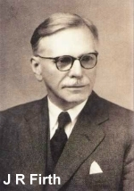
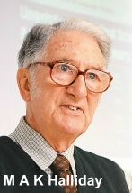
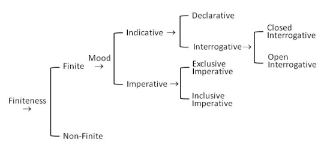

|
Systemic linguistics (or systemics) is a theory of language centred on the notion of language function. In contrast with the structural approaches to language description, systemics places the functions of language as primary, as a "fundamental property of language itself" (Halliday & Hasan 1985: 17), seeking to understand what it is that language does and how it accomplishes it. More generally, systemics looks at how language acts upon and is constrained by the social context in which it functions.   Systemics grew out of the work of J.R. Firth, but it was through his student, M.A.K. Halliday, that it was extensively developed and refined to its present form. Halliday's contributions in this respect have generally been hailed as "the most important development of the ideas within the so-called 'London School' of linguistics" (Butler 1985: 1). Systemics began with Firth's attempt to develop a model to relate language function and context. To achieve this, he proposed a framework based on the concept of the system, defined as an "enumerated set of choices in a specific context" (Kress 1976: xiii). This gave rise to two sets of contexts for any item: the context of the possible choices in the system under consideration, and the surrounding context in which the system itself occurred. In a clausal structure such as S (subject) P (predicator), for example, there is a system which operates at P. This system opens a set of choices which are possible alternatives in that position. Clearly, the structural configuration restricts the choices that can be made since only intransitive verbs are permitted in the P position. If, however, the structural configuration were to be changed to S P C (complement), the system comprising only intransitive verbal elements at P will no longer apply. A changed context, therefore, gives rise to a system applicable in that context, and the description of such a system depends on the statement of the context in which it occurs (Kress 1976: xiii). Formulated this way, the concept of the system gradually took on an increasingly important status in Halliday's successive revisions of the Firthian model. The most comprehensive account of Halliday's early thoughts on linguistic theorising can be found in Halliday (1961). In this paper, four grammatical categories (unit, structure, class, and system) and three scales (rank, exponence, and delicacy) which relate to them are proposed. The unit category, as introduced in an earlier paper by Halliday (1956: 36), is "that category to which corresponds a segment of the linguistic material about which statements are to be made." The units initially suggested by Halliday were those of the sentence, clause, group, word, and morpheme (Halliday 1961: 58). The sentence, as a unit of orthography, later came to be replaced by the clause complex, thereby separating the units of grammar from those of orthography. Units are arranged hierarchically on a rank scale such that a unit of a particular rank consists of one or more units next below. The rank-based theory underscores an important principle firmly held by Halliday—total accountability—which requires every item to be accounted for at all ranks. Total accountability, therefore, resists an analysis of a reply such as (2) as a sentence consisting of a single morpheme. Rather, it would be treated as a sentence consisting of a single clause which itself comprises a single group containing a single word and which, in turn, consists of a single morpheme (Butler 1985: 17):
Structure is "the category set up to account for likeness between events in successivity" (Halliday 1961: 59). It describes the patterns of syntagmatic relations at the grammatical level and captures the similarities between them. (3) and (4), for example, are structurally alike in that both comprise the four basic elements of clause structure, labelled as S (subject), P (predicator), C (complement), and A (adjunct):
As noted, the relation between structure and rank can be seen in how each element of clause structure permits only a certain group of items to operate in that position. The P element, for example, is that element which operates only in the verb group. The scale of delicacy, in comparison, refers to "the degree of detail in which a structure is specified" (Butler 1985: 19), and where this is concerned, Halliday is careful to separate primary from secondary structures. The former contains the minimum number of elements necessary to account for the operation of a given unit. The elements of S, P, C, and A for the clause structure and their various combinations exemplify primary structures. Secondary structures are more detailed (or delicate) in differentiating units of the same rank. The S element, for example, can be treated at secondary delicacy as being either a full or empty subject. The category of class is "that grouping of members of a given unit which is defined by operation in the structure of the unit next above" (Halliday 1961: 64). How this relates to Halliday's model can be seen in the P element of the clause structure—for the group unit, there is a verbal class which has the potential for occurring in the P position. Class takes into account the "paradigmatic possibilities associated with particular elements of structure" (Butler 1985: 24). The paradigmatic possibilities themselves illustrate the scale of exponence. Using clause structure again, the items which represent (or expound) the S element are members of the nominal class of the group unit, such as The old man and Everyone in the room in (5) and (6) below. Exponence relations therefore "relate terms in systems, units, classes and structures and allow the analysis to achieve maximum generalization" (Butler 1985: 28).
The last grammatical category, system, is set up to account for "the occurrence of one rather than another from among a number of like events" (Halliday 1961: 67). Specifically, a system is a set of terms with these characteristics (Halliday 1961: 54):
Scale and category linguistics received several criticisms shortly after it was introduced. Linguists such as Matthews noted a dilemma for the model where rank and total accountability were concerned (in Butler 1985: 29-33). Since "and" can be used to link two clauses together, and since, according to Halliday's rank scale, sentences consist of clauses, then by the principle of total accountability, "and" should also be regarded as a clause. This, however, is complicated by the fact that "and" not only joins clauses but other stretches of language as well, from single nouns to parts of clauses. Matthews' criticism forced Halliday to concede that words such as "and", "or", "but", etc., are able to float between ranks and so lie "outside the scope of the total accountability requirement" (Butler 1985: 30). Other criticisms against Halliday's model involved the categories of class and structure as well as the taxonomic character of the model. The last objection is a particularly severe one, suggesting that the model merely provides taxonomic labels in analysing structures "rather than predicting in an explicit manner exactly what strings of elements constitute the possible grammatical sentences of a language" (Butler 1985: 38). It further indicates the urgent need for the model to be revised. Halliday's early scale and category linguistics gradually led to a more focused approach in his theory of language description. One paper which could be taken to mark the emergence of systemic linguistics is the article by Halliday (1966), in which the concept of the system is taken much further. In contrast with Halliday (1961), where all the grammatical categories are assigned equal theoretical status, Halliday now sees system as a category which has definitive importance in his theory. He argues that systems represent paradigmatic relations in the same way as structures represent syntagmatic relations. It captures the network of options which are available for a particular environment. An illustration of the network of choices for the mood system in English is shown in the figure below (from Berry 1975: 181):
 In the figure, the term finite from the system of finiteness is an entry condition to the mood system. The mood system is therefore dependent on the term finite even though they have little in common by way of meaning. The square brackets in the figure indicate that one or the other alternative represented within them must be chosen. For the entry condition finite, for example, either indicative or imperative must be selected, and if the latter, a further choice must be made between exclusive imperative or inclusive imperative. Most crucial in the development of the theory is Halliday's claim that paradigmatic relations are primary, constituting the basic "underlying form of representation" (Halliday 1966: 93-94). Syntagmatic relations, in contrast, are seen to be fully predictable since structural descriptions can be derived from the paradigmatic choices already made. The link, therefore, is between the deep systemic choices that are made and the surface manifestations realised in sequential structures. One implication of this approach to language description is the careful attitude towards structure since structure itself and its elements are representative of an underlying systemic choice. As Kress (1976: xix) notes, "the correspondence between all items of structure and their features in systems must be established and is demanded by the theory." The emphasis on language as a system explains the name of Halliday's revised theory (systemics). Halliday (1969: 3), however, clarifies that "the name 'systemic' is not the same thing as 'systematic'; the term is used because the fundamental concept in the grammar is that of the 'system'. A system is a set of options with an entry condition: that is to say, a set of things of which one must be chosen, together with a statement of the conditions under which the choice is available." Another key characteristic of systemics is its emphasis on language function. The broad functions that language performs in context are called metafunctions, and for the purpose of this module, we shall only be looking at three of them, as follows:
|
Page-internal links
External links
References
Butler, C.S. (1985). Systemic Linguistics: Theory and Applications. London: Batsford Academic & Educational.
|